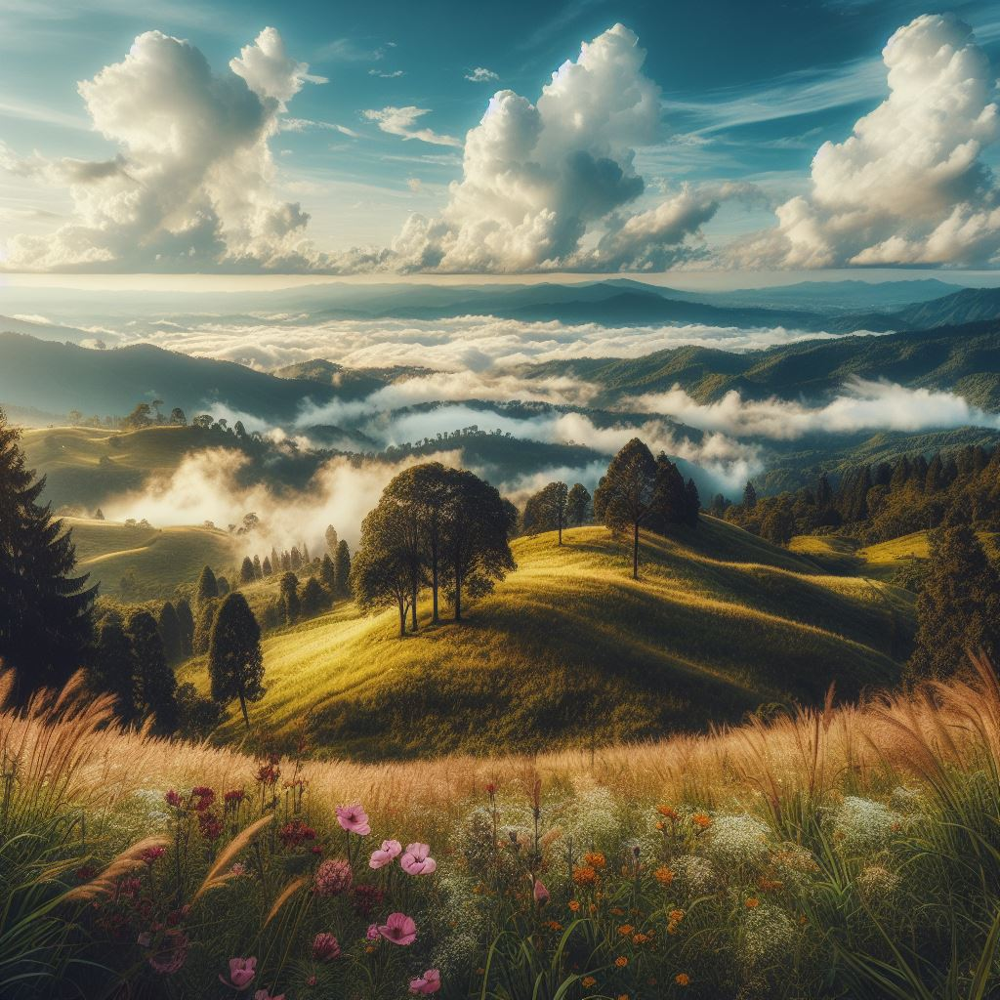
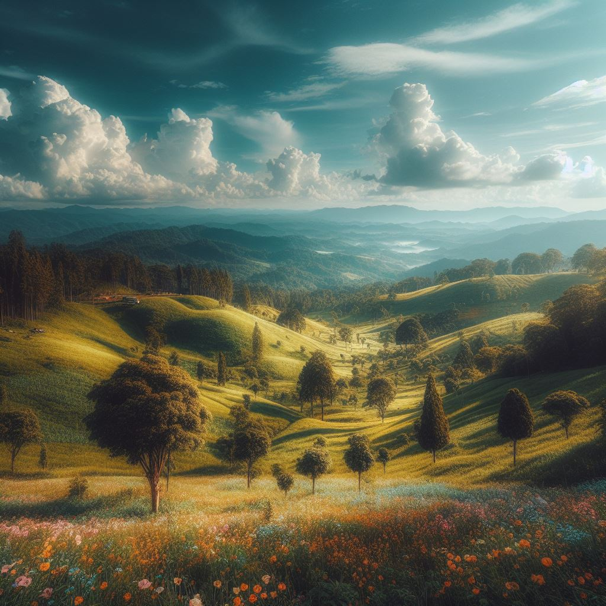

Nepal's hilly regions, nestled between the towering Himalayas and the lowland Terai, offer a diverse and enchanting landscape. The rolling hills, adorned with terraced fields and charming valleys, provide a perfect balance between rugged terrain and fertile plains.
The hilly areas are characterized by lush greenery, making them ideal for agriculture. Terraced fields showcase the agricultural ingenuity of local communities, while traditional villages with unique cultural heritage and architecture dot the landscape. Historic temples and shrines add a spiritual touch to the hilly terrain.
As travelers navigate the winding roads and quaint settlements, they are treated to panoramic views of hills and distant mountain ranges. The hilly areas offer a tranquil escape, providing a serene environment for those seeking a harmonious blend of nature, culture, and relaxation.